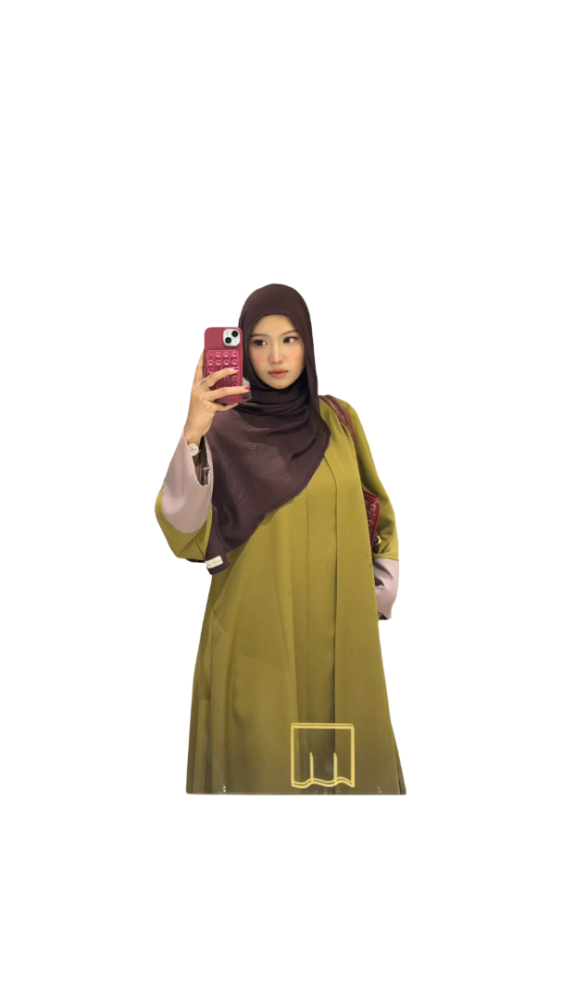

Saya Dea,
Mahasiswi Informatika
Mahasiswi Informatika Institut Teknologi Kalimantan angkatan 2024 yang tertarik mengembangkan solusi digital melalui pembelajaran, analisis sistem, dan implementasi proyek.

Mahasiswi Informatika Institut Teknologi Kalimantan angkatan 2024 yang tertarik mengembangkan solusi digital melalui pembelajaran, analisis sistem, dan implementasi proyek.